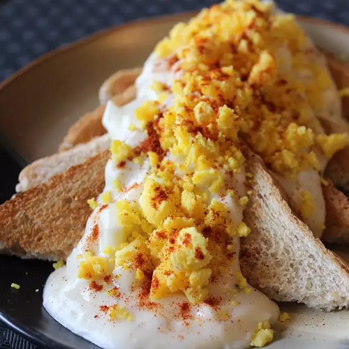

Goldenrod Egg
Description
This recipe is a generational French family tradition for Easter morning. I have searched the entire internet and I've never heard of anyone having it but our family. Everyone likes it so much that we have it more often than just Easter. It's a food that grows on you!
Ingredients
- ½ cup butter
- ½ cup flour
- salt and pepper to taste
- 1 quart milk
- 8 hard-cooked eggs
- 8 slices white bread, toasted
- 1 pinch paprika
Instructions
- Melt butter in a large saucepan over medium heat. Whisk in flour to make a roux, and cook, stirring constantly, for about 3 minutes. Whisk in the milk, and bring to a simmer, stirring constantly. Reduce heat to medium-low, and cook until thickened, 5 to 10 minutes more, stirring occasionally. Season to taste with salt and pepper.
- Separate the hard-cooked egg whites from the yolks. Roughly chop the whites and stir into the white sauce. Press the yolks through a mesh strainer and set aside.
- To serve, place a slice of toast on a plate, and ladle 1/2 cup of white sauce over top. Garnish with egg yolks and a sprinkle of paprika.